A Conexão Brasil-África
Em A Nobreza do Amor, próxima novela das seis da TV Globo, o público será apresentado a uma saga que atravessa continentes, em uma superprodução que reúne um grande elenco, com Lázaro Ramos vivendo seu primeiro vilão. No meio desta história de batalhas e luta por justiça, desperta o amor entre uma princesa africana disfarçada e um trabalhador do de engenho.
A África e o Nordeste brasileiro servem como cenário desta fábula, que promete encantar e emocionar, com muito romance e toques de humor. Criada e escrita por Duca Rachid, Júlio Fischer e Elisio Lopes Jr., com direção artística de Gustavo Fernández e produção de Andrea Kelly, a trama estreia no dia 16 de março.
Mundos Distintos,
Um Só Destino
Duda Santos e Ronald Sotto dão vida aos personagens que conduzem essa história. Futura rainha de Batanga, a princesa Alika (Duda) se vê obrigada a fugir para o Brasil após um golpe de estado do primeiro-ministro Jendal (Lázaro Ramos), após chantageá-la a se casar com ela, em um matrimônio que não chega a ser consumado.
É no interior do Rio Grande do Norte, na fictícia Barro Preto, que ela assume a identidade de Lúcia e conhece Tonho (Ronald), um jovem trabalhador de engenho sensível, honesto e com forte senso de justiça.
O encanto entre a princesa destemida e o homem da terra é imediato. Ao mesmo tempo que Alika busca retornar para Batanga e derrubar o golpista Jendal, Tonho sonha com um pedaço de terra para ajudar seu povo.
O amor floresce, mas terá que lidar com as intrigas cruzadas que cercam suas vidas.
Reino de Batanga
A fictícia Batanga foi uma colônia portuguesa e retomou sua liberdade no final do século XIX em uma guerra liderada por seu futuro rei, Cayman II (Welket Bungué), com o apoio de Niara (Erika Januza), a futura rainha, e Jendal (Lázaro Ramos), que se tornou primeiro-ministro do país. Já em tempos de paz, Alika, herdeira do trono, é prometida em casamento para o primeiro-ministro Jendal, homem de confiança do rei, com o objetivo de protegê-la do mal que o oráculo previu para o reino.
Quando Jendal orquestra um golpe de estado, antes de morrer, o rei confia à filha a missão de limpar seu nome e recuperar o trono. Alike e Niara fogem para o Brasil, onde assumem a identidade, respectivamente, de Lucia e Vera.
Conheça Quem Faz a História
Descubra os personagens que vão emocionar os dois lados do Atlântico.
Núcleo Batanga
-
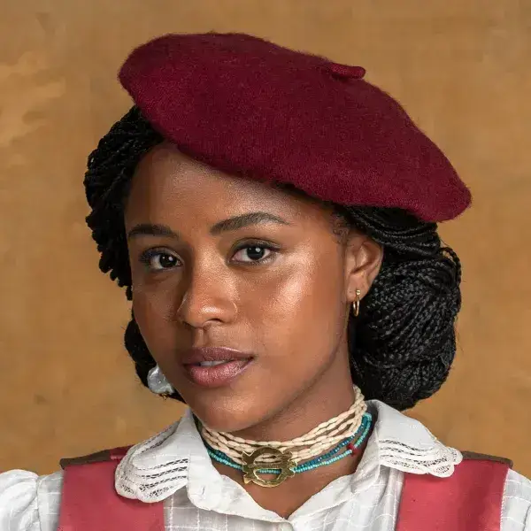
Alika / Lúcia Duda SantosA formosa Princesa de Batanga. Foge para o Brasil e sob a identidade de Lúcia luta para retomar seu reino e conduzí-lo à prosperidade, enquanto vive um amor inesperado com Tonho.
-
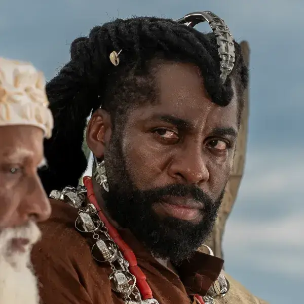
Jendal Lázaro RamosPrimeiro-ministro que articulou o golpe de estado, tomando o poder de Batanga para si. Ambicioso e frio, sua maior obsessão é recuperar Alika, que lhe havia sido prometida.
-
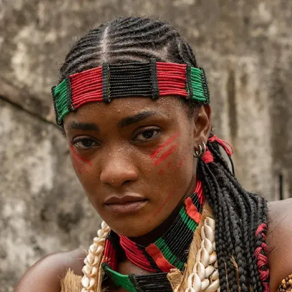
Rainha Niara Cayman / Vera Erika JanuzaRainha forte que lutou ao lado do marido pela liberdade de Batanga. Acompanha sua filha na fuga e na resistência a partir do Brasil.
-
Rei Jafari Cayman Welket Bunguê
O amado Rei Cayman II, herói da liberdade de Batanga. Acaba perdendo a vida na fuga da família real após o golpe de Jendal.
-
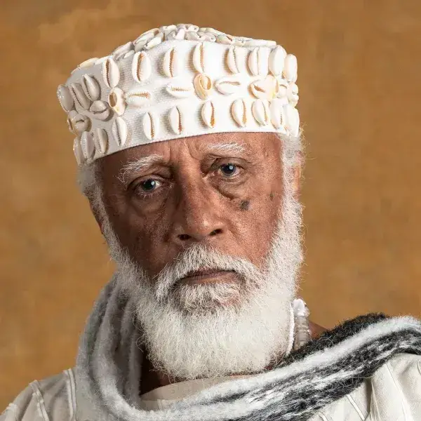
Chinua Hilton CobraFiel conselheiro de Cayman que permanece no cargo mesmo após o golpe, agindo estrategicamente por dentro para ajudar a resistência.
-
Akin André Luiz Miranda
Guerreiro valente e principal aliado de Alika e Niara fora do palácio, na luta para derrubar o tirano.
-
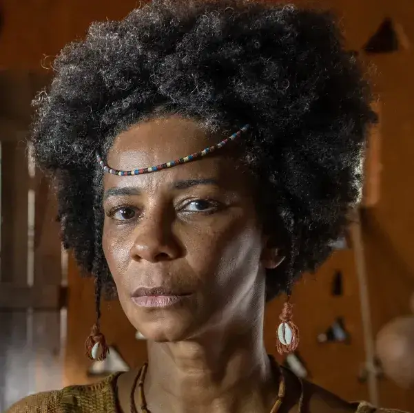
Ladisa Rita BatistaGuerreira formidável, braço direito da resistência contra as forças golpistas do impiedoso Jendal.
-
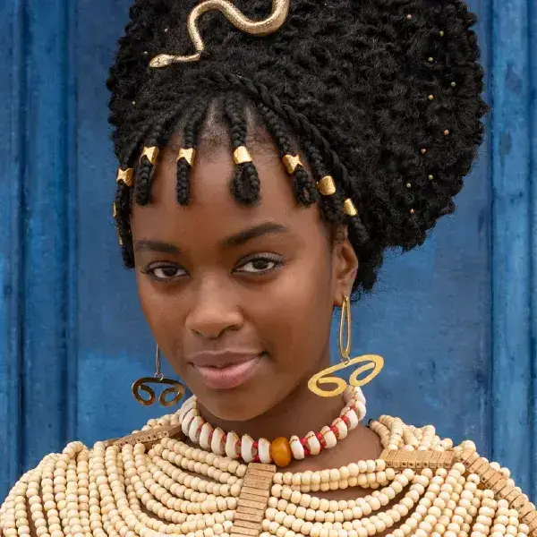
Kênia Nikolly FernandesFilha de Jendal. Jovem fútil e ambiciosa, deslumbrada com o poder e luxos que a posição do pai golpista pode lhe proporcionar.
-
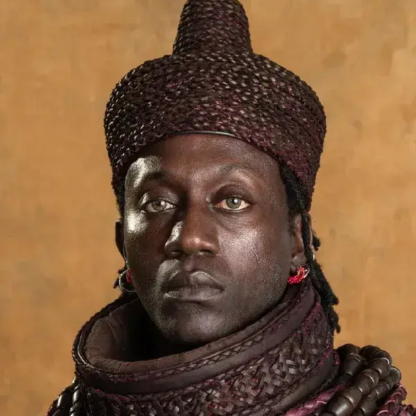
Dumi Licínio JanuárioChefe da guarda de Batanga. Finge apoiar Jendal para proteger e organizar a retomada do poder atuando como agente duplo.
-
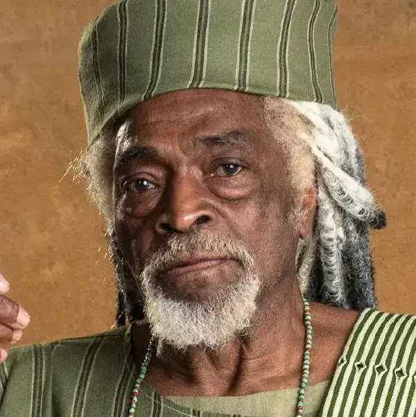
Oruka VadoZelador do oráculo de Batanga, o portador de antigas sabedorias e profecias sobre o futuro do reino.
-
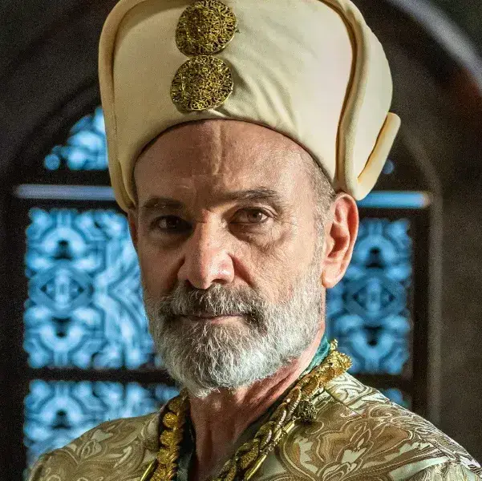
Paxá Soliman Marco RiccaLíder dos comerciantes turcos que assinam o acordo de exploração com Batanga, gerando atritos com os planos de Jendal.
-
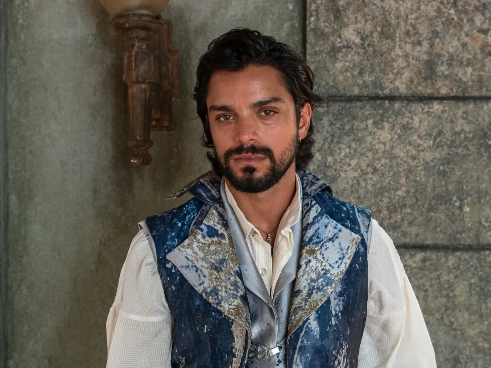
Omar Rodrigo SimasFilho do Paxá Soliman. Apaixona-se por Alika à primeira vista e não hesita em ajudar e arriscar a vida para que ela escape no seu navio.
Núcleo Barro Preto
-
Tonho Ronald Sotto
Jovem simplório e honesto de Barro Preto que sonha com um pedaço de terra. Conhece Alika e se torna a sua grande e improvável paixão.
-
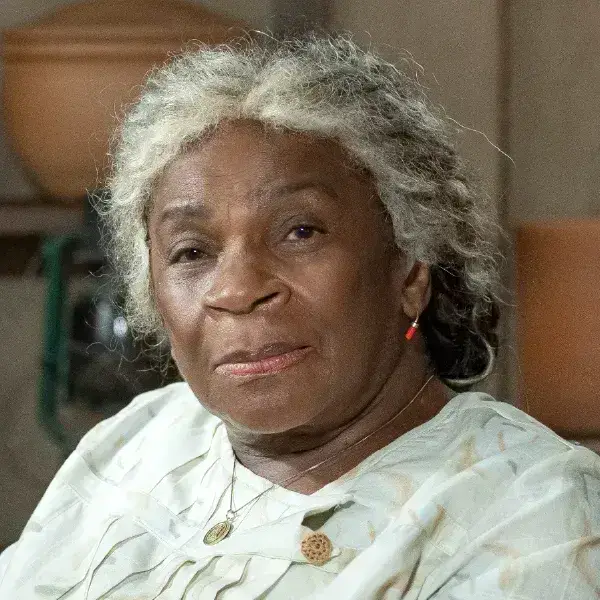
Dona Menina Zezé MottaMatriarca sábia, conselheira de todos e detentora das memórias e tradições de Barro Preto.
-
Mirinho Bonafé Nicolas Prattes
Herdeiro do Engenho. Apesar da amizade de infância com Tonho, suas armações e o investimento noentido em Alika causam enormes atritos.
-
Virgínia Theresa Fonseca
Namorada possessiva de Mirinho que passa a conspirar ferozmente contra a recém-chegada Alika/Lúcia motivada por ciúmes.
-
 José / Zambi Bukassa Kabengele
José / Zambi Bukassa KabengeleIrmão de Cayman II que abdicou do trono para viver no Brasil. Acolhe Niara e Alika em sua residência e as ajuda na adaptação.
-
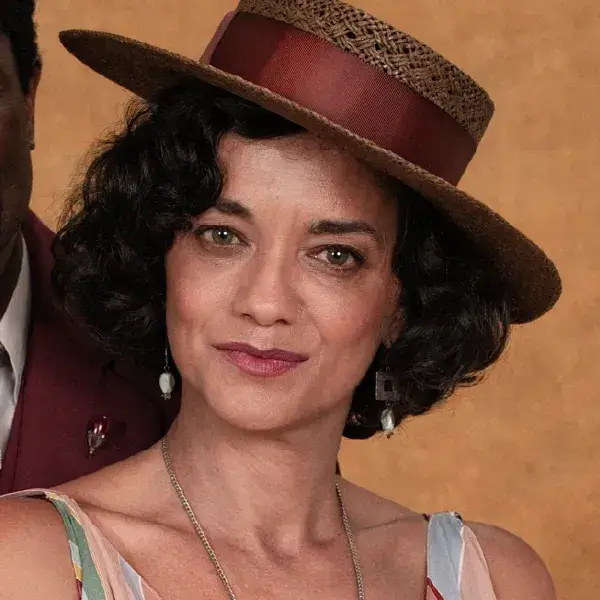
Teresa Ana Cecília CostaA bondosa esposa de Zambi/José. Será fundamental na acolhida da realeza fugitiva e em seus disfarces perante os moradores da cidade.
-
Coronel José Casemiro Bonafé Cássio Gabus Mendes
Poderoso coronel e dono do Engenho de cana e da cidade. Padrinho de Tonho e pai do jovem ambicioso Mirinho.
-
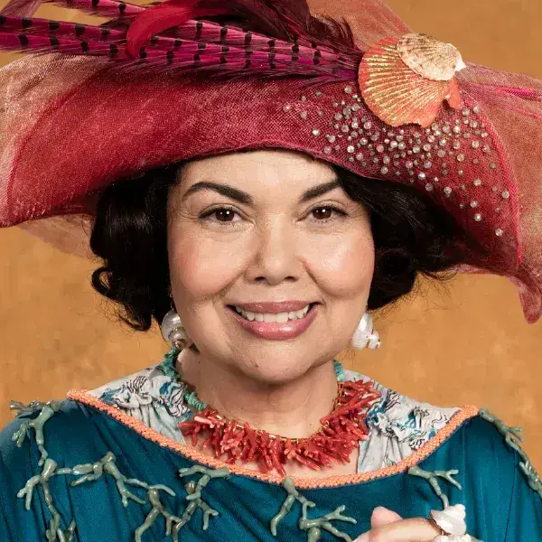
Graça Bonafé Fabiana KarlaA imponente esposa do Coronel Bonafé. Adora ostentar superioridade perante os moradores do Barro Preto.
-
Salma Rayssa Bratillieri
Jovem moradora da cidade que se envolverá nas dinâmicas de poder e amor da região de Barro Preto.
-
Manoel Daniel Rangel
Homem da terra, trabalhador forte que conhece como ninguém os caminhos da cidade.
-
Diógenes Danton Mello
Morador influente de Barro Preto, atuando muitas vezes entre os poderes da igreja e dos Coronéis.
-
Marta Emanuelle Araújo
Uma mulher de fibra do Nordeste, guerreira e disposta a defender a justiça para a sua família.
-
Caetana Cyria Coentro
Mãe de Tonho. Mulher sofrida e batalhadora que trabalha de sol a sol no engenho de cana.
-
Padre Viriato Marcelo Médici
Pároco local, confessor de todos e que tenta manter a paz entre as diversas correntes políticas de Barro Preto.
-
Prefeito Bartô Fábio Lago
Prefeito caricato de Barro Preto (Bartolomeu), subjugado pelo poder e riqueza dos Bonafé da região.
-
Onildo Paulo Lessa
Fiel escudeiro no Engenho e um dos grandes apoios de Tonho em seus planos para obter um pedaço de terra.
-
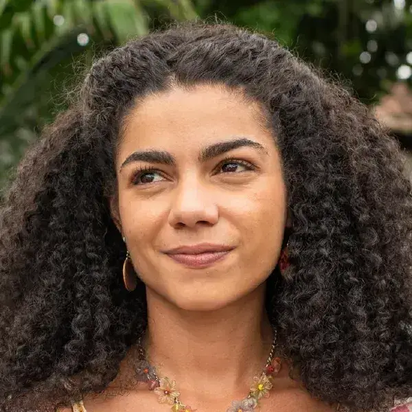
Mundica Samantha JonesMenina espevitada que corre de um lado pro outro da fazenda descobrindo os segredos e fofocas da realeza escondida.
-
Ana Maria Bonafé Julia Lemos
Filha mais nova da família. Observadora atenta das tramoias do irmão Mirinho Bonafé na cidade de Barro Preto.
Palavras dos Realizadores
Curiosidades
O que você precisa saber sobre a superprodução.
Curiosidade 1
Os trabalhos foram iniciados em dezembro, no Rio Grande do Norte, onde desembarcou um grupo de 150 pessoas e mais de 25 toneladas de equipamentos, para gravar em diferentes paisagens, incluindo dunas, falésias, praias e parques. O local serviu tanto para Batanga quanto Barro Preto.
Curiosidade 2
A logística envolveu caminhões de figurino, de produção de arte, além de um camarim móvel, e equipamentos, como câmeras, drones e geradores.
Curiosidade 3
Foram usados também cerca de seis veículos com estruturas desenvolvidas para garantir a estabilidade das câmeras em cenas de movimento em terreno arenoso.
Curiosidade 4
A gerente de produção Andrea Kelly comentou sobre as gravações no Rio Grande do Norte, escolhido, entre outros aspectos, por uma questão geográfica: “A menor distância entre o Brasil e a África está nesse estado, em um ponto onde se costuma falar que o vento faz a curva. Buscamos, então, locações que refletissem as muitas semelhanças entre os dois continentes. O resultado ficou lindo, e nos dá um orgulho imenso”, disse ela.
Curiosidade 5
Entre os cenários escolhidos para a novela, estão o Parque Nacional da Furna Feia, Dunas do Rosado, Maracajaú e Barreira do Inferno, com passagens pelas cidades de Areia Branca, Porto do Mangue, Guamaré, Macau, Maxaranguape, Mossoró, Parnamirim e Tibau do Sul, além da capital Natal.
Curiosidade 6
Em janeiro, Niterói, no Rio de Janeiro, serviu como um “campo de batalha”, dando início à segunda fase das gravações. A equipe gravou na Fortaleza de Santa Cruz da Barra as cenas em que ocorre a batalhas do dos africanos contra os colonizadores portugueses pela independência;
Curiosidade 7
Além disso, no mesmo local, foram filmadas a coroação do rei Cayman (Welket Bungué) e da rainha Niara (Erika Januza), a apresentação da recém-nascida princesa Alika (Duda Santos) aos súditos, o golpe de Jendal (Lázaro Ramos).
Curiosidade 8
Outras locações no Rio de Janeiro, como pedreiras, fazendas e canaviais, também serão usadas para as gravações, envolvendo personagens tanto de Batanga quanto de Barro Preto.
Curiosidade 9
Batanga, segundo Gustavo Fernández, foi concebida com uma estética cheia de referências ao continente africano. “É a primeira vez que a TV Globo se aprofunda na representação da África dessa maneira, com uma narrativa inteira, rica em diversidade e pesquisa minuciosa. Cada detalhe, das roupas aos cenários, foi inspirado em referências reais, fruto de um trabalho cuidadoso”, explica Fernández.
Curiosidade 10
“Já Barro Preto, nossa cidade brasileira”, continua o diretor. “Tem um visual ainda mais fabular do que Batanga. Não é sertão, nem litoral, a cidade está situada em uma falésia, isolada, criando um microcosmo único”, contextualiza o diretor.